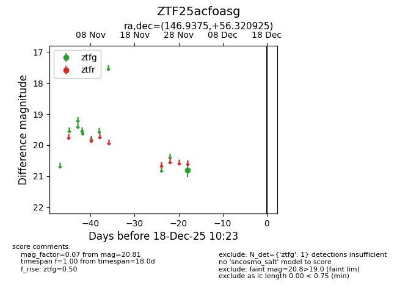
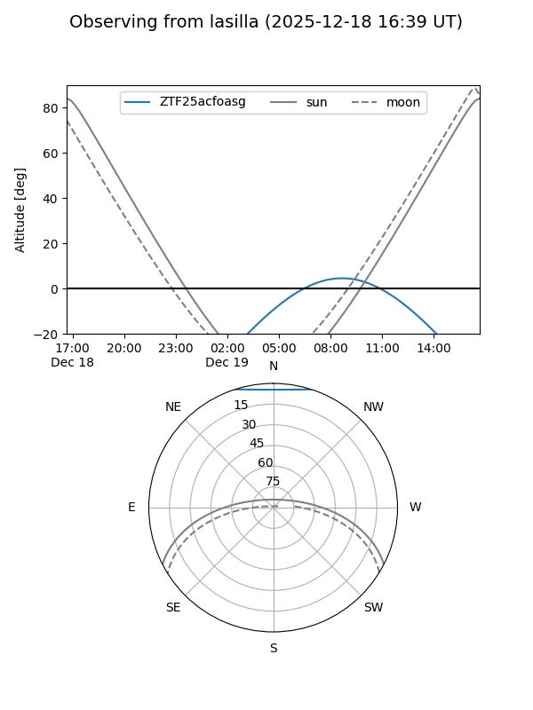
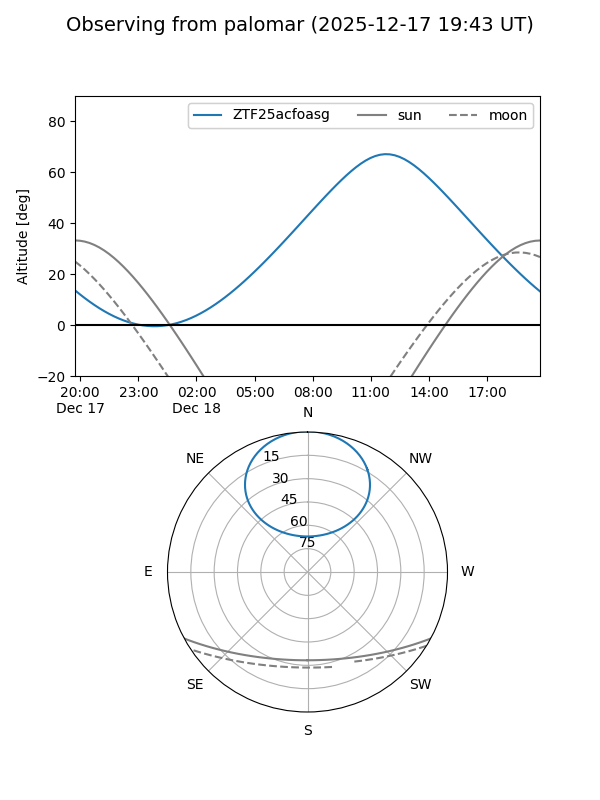

ZTF25acfoasg
Target ZTF25acfoasg at 2025-12-18 11:17
Aliases and brokers:
FINK: fink-portal.org/ZTF25acfoasg
Lasair: lasair-ztf.lsst.ac.uk/objects/ZTF25acfoasg
ALeRCE: alerce.online/object/ZTF25acfoasg
alt names
ZTF25acfoasg (ztf,fink_ztf)
Coordinates:
equatorial (ra, dec) = 146.9375,+56.32092
equatorial (HMS+DMS) = 09:47:45.00,+56:19:15.33
galactic (l, b) = (158.1332,+46.28373)
Photometry
last ztfg=20.81
1 ztfg detections
Lightcurve

Visibility


Additional plots